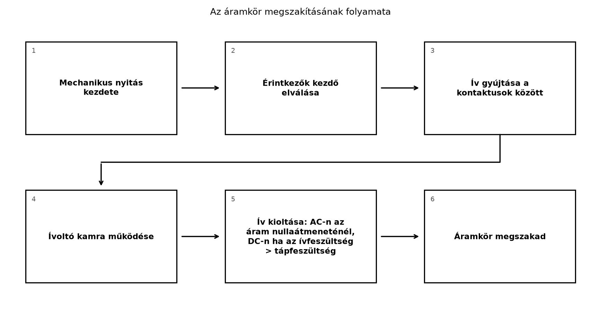

Statikus változat (mint a PDF-ben)
Képzelj el egy műhelyt, ahol egy háromfázisú szalagfűrészt egy mágneskapcsoló indít el naponta akár ötvenszer is. A motor beindít, leáll, újra beindít. A kapcsoló belsejében minden egyes kapcsoláskor apró villamos ív gyullad ki az érintkezők között. Ha a kapcsolót nem erre a terhelésre méretezték, az ív egyszer csak annyira fölhevít, hogy az érintkezők összehegednek, és a gép kikapcsolás után is forog. Az ilyen hiba nem csupán kényelmetlen, hanem életveszélyes is lehet: a vezérlés leállít, a motor mégsem áll le, és a szerelő azt hiheti, hogy a gép feszültségmentes. Ebből a fejezetből megérted, miért keletkezik az ív, hogyan oltjuk el, és mit jelentenek a kapcsolókészülékek katalógusában szereplő AC-1, AC-3, AC-4 és DC-13 jelölések.
Az áramkört megszakító kapcsoló nem egyszerűen csak „szétszedi” a vezetéket. Az utolsó pillanatban, amikor az érintkezők elkezdenek elválni, az érintkezők felülete még nagyon közel van egymáshoz. A rájuk kapcsolt feszültség elektromos tere igen nagy helyi térerősséget hoz létre, és a fémfelületek közötti levegő vagy más gáz ionizálódik. Az ionizált gáz elektromosan vezető csatornát alkot, amelyen keresztül továbbra is folyhat az áram: ez a villamos ív. Az alábbi folyamatábra azt mutatja, hogy a kapcsoló nyitása csak akkor fejeződik be, ha az ív elalszik.

A valóságban ez a folyamat ezredmásodpercek alatt játszódik le. A kapcsolókészülék feladata, hogy az ívet megbízhatóan kioltsa, még akkor is, ha az áramkörben nagy induktivitású fogyasztó, például motor, fojtótekercs vagy mágneskapcsoló tekercs van. Az Elektromágneses indukció, önindukció és az RL-tag alfejezetből már tudod: a tekercsben tárolt mágneses energia kikapcsoláskor nem tűnhet el azonnal, ezért a tekercs feszültséglökést gerjeszt, amely még erősebben táplálja az ívet. Ezért a kapcsolók tervezésekor nem mindegy, milyen terhelést kapcsolunk.
Definíció. A kapcsolókészülék érintkezője (kontaktusa) az a két, egymással szembeforduló áramvezető alkatrész, amelyek zárva létrehozzák az áramvezető kapcsolatot, nyitva pedig megszakítják az áramkört.
A kapcsolókat a főáramkörben használt főérintkezőkre és a vezérlőáramkörben használt segédérintkezőkre osztjuk. A főérintkező anyaga általában ezüsttartalmú ötvözet, mert az ezüst jól vezeti az áramot, ellenáll a kopásnak és a hegedésnek, továbbá oxidrétege is viszonylag jól vezet. A kisebb terhelésű segédérintkezők szintén ezüst- vagy aranyötvözetűek lehetnek.
Záráskor a mozgó érintkező mechanikus erővel a rögzített érintkezőre nyomódik. A teljes fémfelület csak mikroszkopikusan érintkezik egymással, ezért a valóságos érintkezési felület sokkal kisebb, mint a látható felület. Emiatt az áram az érintkezési pontokon nagyon nagy áramsűrűséggel folyik, és a felületen hő keletkezik. Az érintkezőnyomás fontos ahhoz, hogy az átmeneti ellenállás kicsi legyen: ha a rugónyomás gyenge, az érintkező melegszik, oxidálódik, és hamar tönkremegy.
Nyitáskor az érintkezők fokozatosan válnak el, és az utolsó érintkező pontokban az áramsűrűség rendkívül nagyra nő. A fém megolvadhat, gőzölöghet, és a keletkező fémgőzök segítik az ív begyújtását. Az ív egy kis elektromos kisülés, amely az érintkezők között ég, és megolvasztja az érintkezőanyagot. Ezt a jelenséget érintkezőkopásnak nevezzük.
Definíció. A villamos ív olyan önfenntartó gázkisülés, amelyben az ionizált gázcsatornán át folyik az áram, miközben az érintkezők közötti feszültség viszonylag kicsi, az áramsűrűség viszont igen nagy.
Az ív keletkezéséhez két feltétel szükséges: megfelelő feszültség a kontaktusréteg ionizálásához, és elegendő áram a kisülési csatorna fenntartásához. Váltakozó áramú hálózaton az áram minden félperiódusban – 10 ms-onként – áthalad a nullán; ilyenkor az ív természetes módon kialszik. Induktív terhelésnél (motor, tekercs) azonban az áram nullaátmeneténél a tápfeszültség közel a csúcsán van, ezért a rés két oldalán gyorsan nagy visszatérő feszültség jelenik meg. Ha a rés még forró, ionizált, és szilárdsága lassabban nő, mint ez a feszültség, az ív újragyullad.
Szabály. Váltakozó áramú körben az ív oltása elsősorban a nullaátmenet kihasználásán alapul: a kapcsolókészüléknek gyorsan le kell hűtenie az ívoszlopot, növelnie kell a rés szigetelési szilárdságát, és meg kell akadályoznia az újragyulladást.
Egyenáramú körben nincs természetes nullaátmenet. Ezért az egyenáram megszakítása lényegesen nehezebb: a kapcsolónak saját magának kell megnövelnie az ívet addig, amíg az ívfeszültség a tápfeszültség fölé nem nő; ekkor az áram nullára csökken, és az ív kialszik. Ebben az ívoltó kamra mágneses kifúvó hatása és a nagy sebességű kontaktnyitás segít.
Ívoltó kamra. A legtöbb ipari kapcsolókészülékben az ívet egy keskeny, hőálló anyagból készült kamrába terelik, ahol az ív hosszát megnyújtják, és az ívoszlopot egymástól elszigetelt lemezekkel osztják fel. Az így létrejövő deionkamra sok kis részívre bontja a nagy ívet, megnöveli a teljes ívfeszültséget, és lehűti a gázt. A működést segítheti mágneses kifúvó tekercs is, amely az árammal arányos mágneses teret kelt, és az ívet a kamrába tereli. A kismegszakítók esetében hasonló elvet alkalmaznak, de ott a feladat gyors zárlatmegszakítás, így a kamra anyaga és geometriája alkalmazkodik a nagy zárlati áramokhoz.
A következő ábra egy szemléltető modellen mutatja a kétféle oltást. (a) Váltakozó áramon (230 V, 10 A csúcs) a 2 ms-nál nyitó érintkezők között az ív a 10 ms-os nullaátmenetig ég, ott kialszik. (b) A nullaátmenet után a visszatérő feszültség (itt kb. 500 V-os csúcsig lengő görbe) és a rés szilárdsága versenyez: hat részívre bontott ívnél a szilárdság (kb. 900 V) gyorsabban nő, az oltás végleges; két részívnél (kb. 300 V) az ív újragyullad. (c) Egyenáramon (220 V, 10 A, 50 mH) tíz részív kb. 250 V ívfeszültséget ad, ez nagyobb a tápfeszültségnél, ezért az áram kb. 4,8 ms alatt nullára csökken; öt részívnél (kb. 125 V) az ív tovább ég. Az értékek szemléltetők, nem gyártói adatok. A HTML-kiadásban a nyitás időpontja, a részívek száma és a DC tápfeszültség csúszkával állítható.
Összefüggés. Az ívben felszabaduló energia hozzávetőleg , ahol az ívfeszültség, az íváram, pedig az ív égési ideje. Ezt az energiát az érintkezők anyagának és az ívoltó kamrának kell elviselnie, és el kell vezetnie.
Definíció. A kapcsolókészülékek használati kategóriája (utilization category) a szabvány által meghatározott betűkód, amely megmondja, hogy a készüléket milyen jellegű terhelés (ellenállás, induktív, motorindítás, lámpaterhelés stb.) kapcsolására tervezték, és milyen igénybevételt kell kiállnia.
A kapcsoló- és vezérlőkészülékekre vonatkozó MSZ EN 60947 sorozat az alábbi gyakori kategóriákat ismeri:
A(z) Mágneskapcsolók és relék alfejezetben majd látni fogod, hogy a mágneskapcsoló kiválasztásakor a kategória és az névleges üzemi áram együttese dönti el, hogy a készülék alkalmas-e például egy adott motor indítására. Ha a katalógusban csak annyit látsz, hogy „16 A kontaktor”, az önmagában kevés: az AC-1 16 A egészen más igénybevételt takar, mint az AC-3 16 A.
Definíció.
Példa. Egy mágneskapcsoló adatai: , (AC-3), , mechanikai élettartam kapcsolás, villamos élettartam AC-3 esetén kapcsolás, AC-4 esetén kapcsolás. A fenti adatok nagyságrendi példák, a pontos értékek a gyártói adatlapon szerepelnek (ellenőrizendő: konkrét gyártói adat). A példa jól mutatja, hogy ugyanaz a készülék AC-4 üzemben csak töredék ideig él, mert sokkal nagyobb ívterhelést kap.
1. példa – ellenállásfűtés kapcsolása AC-1
kategóriában.
Egy háromfázisú fűtőbetét adatai:
,
,
.
Mekkora a betét vonali árama? Milyen
értékű AC-1 kapcsolót válasszunk, ha a betétet közvetlenül
kapcsoljuk?
Adott:
,
,
.
Keresett:
.
Képlet: háromfázisú teljesítmény
.
Behelyettesítés:
.
Ellenőrzés: a fűtőbetét teljesítménye ellenállás
jellegű, az áram alig tartalmaz bekapcsolási lökést, ezért az AC-1
kategória megfelelő. A katalógusból választott, például
AC-1-es kapcsoló bőven elegendő, és a kisebb igénybevétel miatt a
villamos élettartam is nagy.
2. példa – motor indítása AC-3 kategóriában.
Egy kalickás aszinkron motor adatai:
,
,
,
.
Számítsd ki a névleges áramot, és ellenőrizd, hogy egy
(AC-3) mágneskapcsoló alkalmas-e a közvetlen indításra.
Adott:
,
,
,
.
Keresett:
(vonali áram – ezt kapcsolja a kontaktor).
Képlet:
.
Behelyettesítés:
.
Ellenőrzés: a motor névleges árama kb. 11 A, tehát a
AC-3-as mágneskapcsoló a minimum, és
teljesül, de a bekapcsolási áramlökés (kb. 6–8
)
rövid időre kb. 70–90 A-t is elérhet. Az AC-3 kategória pontosan ezt a
rövid idejű indítási igénybevételt írja le, ezért a katalógus szerinti
érték az irányadó. A kiválasztási szabály: a kontaktort a katalógus
AC-3, 400 V oszlopa szerint választjuk (a motor teljesítménye ne haladja
meg a készülék AC-3 kW-értékét, és
).
Tartalékot, vagyis egy mérettel nagyobb készüléket gyakori kapcsolásnál,
nehéz indításnál és magas környezeti hőmérsékletnél választunk
(ellenőrizendő: gyártói katalógus).
Szabvány. A kapcsoló- és vezérlőkészülékekre vonatkozó általános követelményeket a Magyarországon is érvényes MSZ EN 60947 sorozat határozza meg. A mágneskapcsolók és motorvédő kapcsolók kategóriáit és típusvizsgálatait az MSZ EN 60947-4-1, a vezérlőkapcsolókat az MSZ EN 60947-5-1 tartalmazza. A használati kategória betűjele (AC-1, AC-2, AC-3, AC-4, AC-15, DC-1, DC-13 stb.) önmagában nem elegendő: mindig az adott kategóriához tartozó és értékkel együtt érvényes. A készüléken lévő adattáblán vagy a katalógusban a gyártó megadja, hogy milyen feszültségen, milyen kategóriában, mekkora áramot lehet kapcsolni. A pontos táblázatokat és az aktuális szabványkiadást mindig ellenőrizni kell (ellenőrizendő: MSZ EN 60947-4-1 kiadás, kategóriatáblázatok).
Megjegyzés. Régi hazai terveken és katalógusokban eltérő kategóriajelölésekkel is találkozhatsz (ellenőrizendő: a régi MSZ jelölései); ilyenkor a mai MSZ EN 60947-4-1 szerinti kategóriát a gyártói megfeleltetés alapján kell megállapítani.
Egy asztalosüzem fűrészgépét mágneskapcsolóval indították le és hagyták működni. A szerelő észrevette, hogy a bekapcsolás után a kontaktor főérintkezői erősen „pattognak”, és időnként megolvadt, ezüstös színű cseppek repülnek ki. A gép néha késve állt le, és a mágneskapcsoló zúgott. Kiderült, hogy a kontaktort nem a motor indítására, hanem AC-1-es ellenálláskapcsolóként választották, mert a katalógusban csak az AC-1 oszlop „25 A” értékét nézték. Ugyanennek a kontaktornak az AC-3 szerinti értéke csak kb. 9 A (ellenőrizendő: gyártói adat), miközben a 5,5 kW-os motor névleges árama 11 A volt. Az érintkezők az indítási és leállási ívek miatt hegedni kezdtek, mert a készülék az induktív terhelés ívét az AC-3 szerinti áramra méretezett szinten nem bírta megbízhatóan kioltani.
A javítás során a kontaktort lecserélték egy (AC-3) típusra, és azóta a gép megbízhatóan üzemel. Az eset tanulsága, hogy a kapcsolókiválasztásnál soha ne csak az áramot nézd, hanem az adott használati kategóriát is.
A kategória figyelmen kívül hagyása.
A szerelő azt hiszi, hogy ha a készülék névleges árama nagyobb a motor
áramánál, akkor mindegy, milyen terhelést kapcsol. Pedig egy AC-1-esel
méretezett kontaktor AC-3-as motort kapcsolva gyorsan tönkremegy az
ívterhelés miatt. Helyes: mindig az adott terhelésre
előírt kategóriát válaszd, és a gyártói táblázatban ellenőrizd a
kategóriához tartozó
-t.
Egyenáramú tekercs kapcsolása váltakozó áramú
segédérintkezővel.
Egyes szerelők a mágneskapcsoló tekercsét (egyenáramú, induktív
terhelés) olyan segédérintkezővel kapcsolják, amely csak AC-15 vagy AC-1
kategóriában jóváhagyott. A DC-13-as kategóriájú érintkezőt kell
választani, mert az egyenáramú induktív terhelés megszakítása sokkal
nehezebb. Helyes: a segédérintkező katalógusadatai
között mindig ellenőrizd a DC-13 értéket, ha tekercset vagy
mágnesszelepet kapcsolsz.
A hegedett érintkezők „megreszelése”.
Amikor a kontaktor főérintkezője összeheged, néhányan szigetelőfogóval
szétfeszítik, majd reszelővel „megjavítják” a felületet. Ez az
érintkezőgödrök és a felületi ezüstréteg sérülése miatt további
hegedéshez, nagy átmeneti ellenálláshoz és túlmelegedéshez vezet.
Helyes: a hegedt, erősen kiégett érintkezőket cserélni
kell, mert a gyári geometria és anyag nem pótolható házilag.
A kapcsolási gyakoriság alábecsülése.
AC-3-as kontaktort gyakori reverzáló vagy ellenáramú fékezésre
használnak, mert „úgyis 16 A”. Az AC-4 üzem a készüléket néhány hónap
alatt tönkreteszi, hiába az AC-3-as adat. Helyes: az
AC-4-es kategóriához méretezett kontaktort vagy
lágyindítót/frekvenciaváltót kell választani, ha az üzemállapot gyakori,
nagy igénybevételű kapcsolást igényel.
1. feladat (A) – Definiáld röviden az ívet és az ívoltó kamra szerepét.
2. feladat (A) – Egy 230 V-os, 25 A-es AC-1 terhelés ellenállását számítsd ki.
3. feladat (B) – Egy 5,5 kW-os, 400 V-os, $ \eta = 0{,}86 $, $ \cos\varphi = 0{,}83 $ motorhoz mágneskapcsolót választunk. Számítsd ki a motor névleges áramát, és döntsd el, hogy egy (AC-3) kontaktor megfelel-e.
4. feladat (B) – Párosítsd a kategóriákat a terhelés
jellegével: AC-1, AC-3, DC-13, AC-15.
a) kalickás motor közvetlen indítása,
b) fűtőellenállás,
c) mágneskapcsoló tekercs egyenáramról,
d) váltakozó áramú vezérlőtekercs.
5. feladat (C) – Magyarázd el, miért hegedhet össze a kontaktor érintkezője, ha az AC-3 szerinti áramra választott kontaktort gyakori AC-4 üzemre használják! Az ív energiájának és az érintkező anyagának szempontjából érvelj.
6. feladat (D) – Rajzolj le egy egyszerű áramkört, amelyben egy mágneskapcsoló főérintkezője egy 400 V-os háromfázisú motort indít, és jelöld a kontaktor vezérlőtekercsét. Írd le, mit ellenőriznél, mielőtt kiválasztod a kontaktort: milyen feszültséget, áramot, kategóriát, élettartamot?
1. feladat.
Az ív önfenntartó gázkisülés, amely a kapcsoló érintkezőinek elválásakor
keletkezik, mert a kontaktusok közötti gáz ionizálódik, és vezeti az
áramot. Az ívoltó kamra feladata az ív megnyújtása, hűtése, részekre
bontása, és ezzel az ív eloltása.
2. feladat.
.
3. feladat.
.
A 16 A-es AC-3 kontaktor alkalmas, mert
,
és az AC-3 kategória a kalickás motor indítására tervezett.
4. feladat.
a) AC-3, b) AC-1, c) DC-13, d) AC-15.
5. feladat.
AC-4 üzemben a gyakori, nagy indítóáramú kapcsolások miatt az ív égési
ideje és energiája sokkal nagyobb, mint AC-3 esetén. Az érintkezők ezért
jobban fölhevülnek, az anyag megolvad, és a lehűlés után összehegedhet.
Az AC-3 szerinti áramra választott kontaktor ívoltása és érintkezői nem
erre a hőterhelésre méretezettek, így gyorsan tönkremegnek. AC-4 üzemhez
a kontaktort az AC-4 szerinti
vagy a gyártói élettartam-diagram alapján választjuk – ez rendszerint
egy-két mérettel nagyobb készüléket jelent (ellenőrizendő: gyártói
adat).
6. feladat.
A rajz leírása: háromfázisú főáramkör 400 V (L1, L2, L3) →
mágneskapcsoló főérintkezők (három pólus, jelölése K1; 1/L1–2/T1,
3/L2–4/T2, 5/L3–6/T3) → motor (M1, U1, V1, W1 kapcsok). A
vezérlőáramkörben nyomógomb, védőfunkció és K1 tekercs (A1–A2).
Ellenőrzés:
,
legalább a motor névleges áramánál nagyobb AC-3 kategóriában, tekercs
feszültsége és a segédérintkezők kategóriája, valamint a gyártó által
megadott villamos élettartam az adott kapcsolási gyakoriságra.
A kapcsolókészülék nyitásakor a kontaktusok között villamos ív keletkezik, mert a fémből és levegőből ionizált gáz vezeti az áramot. Az ív energiája az ívfeszültség, az íváram és az égési idő szorzata; ez a hő okozza az érintkezők kopását, hegedését. Váltakozó áramon a nullaátmenet segíti az oltást, egyenáramon viszont az ívoltó kamrának kell az ívet megnyújtania, hűtenie és megszakítania. A kapcsolókészülékek használati kategóriái – AC-1, AC-3, AC-4, DC-13 és mások – azt adják meg, milyen terhelést kapcsolhatunk az adott névleges üzemi feszültségen () és áramon (). Az AC-1 ellenállásjellegű terhelésre, az AC-3 kalickás motor közvetlen indítására, az AC-4 gyakori, nehéz indításra, a DC-13 egyenáramú induktív vezérlőterhelésre vonatkozik. Továbbvitt eredmény. A használati kategória és a névleges adatok (, , , villamos élettartam) alapján választjuk ki a mágneskapcsolót a Mágneskapcsolók és relék alfejezetben. A kiválasztásnál mindig az MSZ EN 60947 sorozat és a gyártói adatlap az irányadó. A hegedt vagy erősen kiégett érintkezőt nem reszeljük, hanem cseréljük.
A fejezet fizikai alapjai stabil elektrotechnikai ismeretek. A használati kategóriák elnevezése és a névleges adatok a klasszikus MSZ EN 60947 sorozatra épülnek, de a pontos kategóriatáblázatokat, a gyártói adatokat és az aktuális szabványkiadást ellenőrizni kell. Nem hivatkoztam konkrét szabványszakasz-számra, táblázatra vagy gyártói értékre; azoknál a helyeken, ahol ilyen szerepel, jelöltem az ellenőrzési igényt.